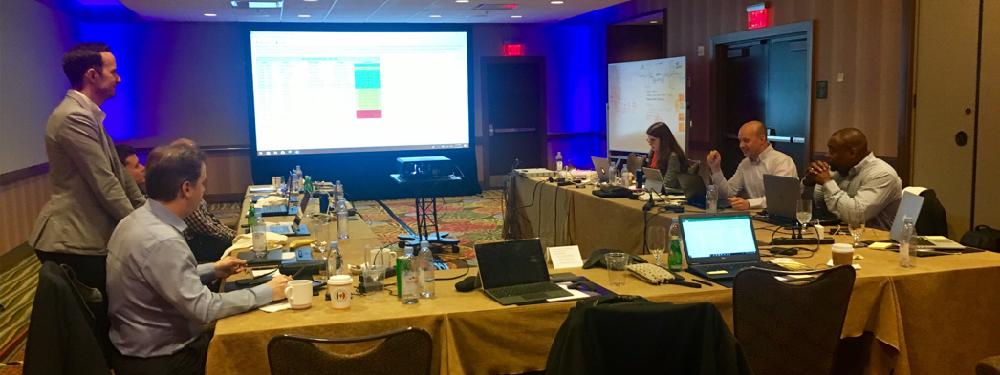
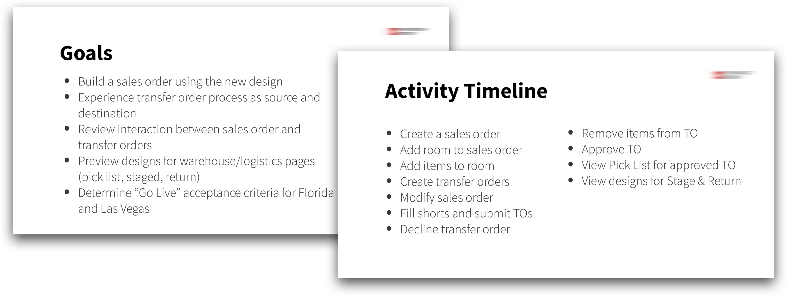
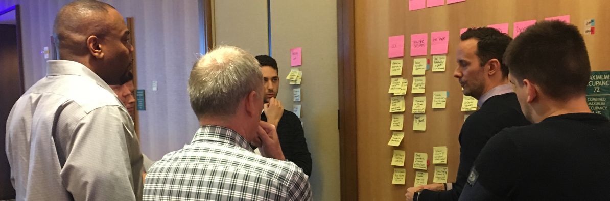
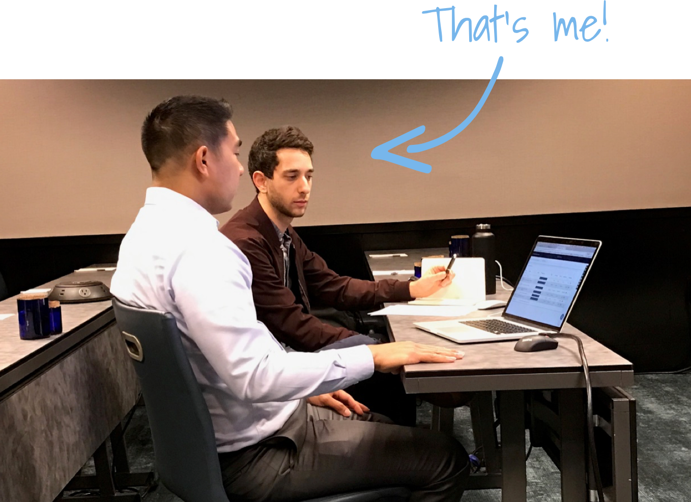
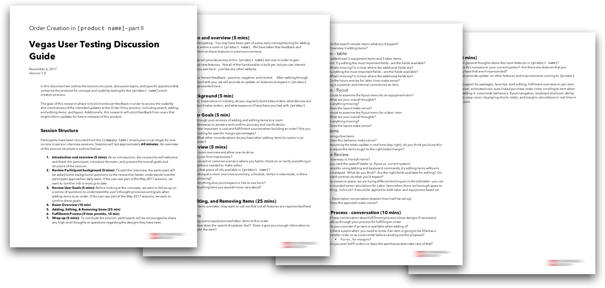

REDACTED [company name], an event technology company, is the leading provider of unique, creative and innovative in-house audiovisual services for hotels, conference centers, and resorts throughout North America, Asia and Australia. REDACTED [company name] is known for supporting massive events such as the International Consumer Electronics Show (CES). Most of their revenue comes from their Las Vegas market, which operated differently than their smaller hotels across the rest of the US.
After the company's failed effort to consolidate multiple legacy systems across different markets and regions over the course of 3 years, they brought us in to try again. The business decision was ultimately made to rebuild one of their current custom platforms as opposed to starting fresh.
After thorough review of the existing product, we identified the following problems to solve:
We knew we needed to get all their users across multiple markets on a single custom software platform. Even with our strong product team, this would be no small task. Aside from the technical challenges our developers faced, it left me and the rest of the design team with a huge challenge:
Below are some of the main features we redesigned based on a solid research and testing cadence while working towards gaining users trust in the field.
Sales Orders provide REDACTED [company name] with the flexibility to build event scenarios with any number of equipment and labor configurations as soon as the concept phase begins.
Transfer Orders allow REDACTED [company name] venues to acquire top-of-the-line equipment for their event, even if they don’t have it available on hand.
REDACTED [product name] facilitates warehouse and logistics best practices to ensure the event runs smoothly from start to finish no matter what happens.
Initially, the company was skeptical to ramp up spending on a project many internally considered sunk. Understandably, too, management had many questions like:
It seems as though not only did we need the users to regain trust in the product, but we needed our stakeholders to get bought back into their vision for a unified custom software solution.
Before any research or testing efforts in business product design, it's always best to remember the golden rule:
The reality was our users had been burned before (some, many times) and were jaded and skeptical that a new product team could come in from the outside and fix their software. We knew we had to start having conversations with folks in the field immediately. It's not always easy to talk to your users, though – especially when they're spread out all over the continent, cost is a concern, and frankly, you haven't met any of them yet.
In order to employ the most cost effective but impactful strategy, we identified 3 main methods of research and testing that worked efficiently for this engagement:
Right away, our team began releasing incremental changes through the staging and production environments in a dual-track agile process, so we had an advantage from the beginning. We had the ability to get feedback from users on live designs.
This methodology is perfect for testing incremental changes in a staging environment with an intentionally selected group of users from different levels and regions of the business. It also empowers the selected response team because it makes users feel like an important voice in the building process.

I can't show you real client data so here's a stock photo of a business chart!
What I've learned from the UAT process, there's a few critical things that you need to make it an effective testing method:
While the best way to get feedback is from live features, the next best thing is working with people in person, in real time, in a simulated environment. What I mean by real time is instead of just showing some A/B concepts and having users pick what they like best (unreliable for this task based product), instead we assembled groups of users and asked them to complete tasks from start to finish as if they were really doing their job.
A pic of a group working session with a variety of different participants in Orlando
While this method is more time consuming and expensive, I would argue it's the most valuable for creating a shared understanding between designers and people who use your product.
Example slides from a recent group working session
As you can see from the slide examples above, this format works best to accomplish larger tasks that simulate a real work day. Taking breaks after chunks of tasks is important. Gathering feedback and having group discussions about what went well, what didn't, and how to move forward are the most valuable takeaways.
Additionally, taking a step away from the software and moving to sticky notes on a wall will always facilitate a better discussion and ensure the entire group has a shared understanding of next steps.
Me with with team prioritizing features after our working session
Some of my favorite sessions have come from this group format. It helps build rapport with your users and gets people in a room that may otherwise never interact or only interact via email. Remember, these sessions will produce valuable insights, but ultimately the simulation will not match a true live environment. Make sure to continue to test the features via UAT surveys that were simulated in these sessions once they are released. Most likely, for better or worse, you'll learn something new.
Finally, 1-on-1 sessions (both remote and in person) provide valuable information you may not be able to gather from UAT surveys and group sessions. These sessions are ideal for walking through tasks from start to finish and asking a lot of questions along the way. These are especially helpful when the participant speaks their thoughts aloud when completing the tasks.
You can see here, the in-person sessions are generally pretty casual
Providing a casual environment with no more than two interviewers in the room allows participants to open up and say what they really mean. Often, we designers forget that users may not be willing to be completely transparent with us if they don't think we're on their side - especially when we ask them to complain to us.
Usually, the most negative information is spilled in these direct 1-on-1 sessions. It's good to give users time to vent so they can see at least someone is listening, even it it doesn't feel like it.
Example script from a 1-on-1 session
It's advisable to follow a script here, especially since these interviews are best to gather targeted feedback on certain processes or new features. I've tested concept designs in tools like InVision as well as built features tested in a staging environment successfully.
I'll leave you with a pic of me listening.
Wow, you made it to the end of the case study. Hopefully you liked it. And I hope you'll use these research and testing methods to validate your ideas when building your next product. Check out some of the features in the final design based on our learnings.

This concept for an profitability by item view came straight from user discussions about building quotes. The hyper detailed views needed when building quotes didn't allow users to see the full picture when they needed.

One of the first things we did was redesign the Sales Order Overview page. A card based layout made sense, especially since there's a lot of user inputed variable content. Sales Orders can be weeks long with hundreds of rooms and items, or just a single-room half day event. This layout style allows for either extreme, but optimized for the average order seen here.

Building an order at the most granular level, consists of adding equipment and labor lines to the room setup at the event. This table the user builds is then used for quoting, logistics, and billing activities. It is arguably the most critical feature of the entire system and because of this, we spend the most time and money researching and testing these workflows with users.
Speed was a major factor in rebuilding the edit items feature set. We added a configurable favorites panel that each user could customize for themselves.
After the sales process is completed, the equipment needs to be sourced. Anyone in the logisitcs or asset management world knows this can be a pain. We built a tool to help users quickly generate Transfer Orders, in order to borrow gear from other venues or their respective warehouses – often in bulk.
While trying to source equipment from other venues and warehouses, often times the exact SKU on the sales order (quote) isn't available. We built a Substitutions feature to allow users to expand their sourcing to include similar items that may be acceptable for this event.